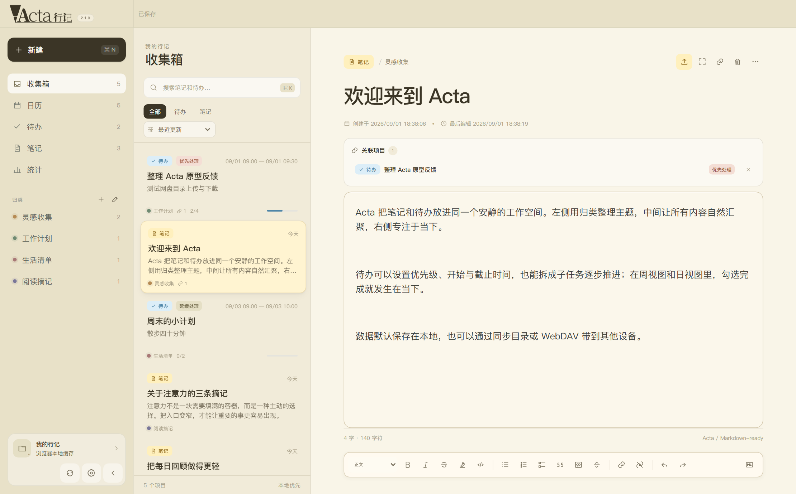
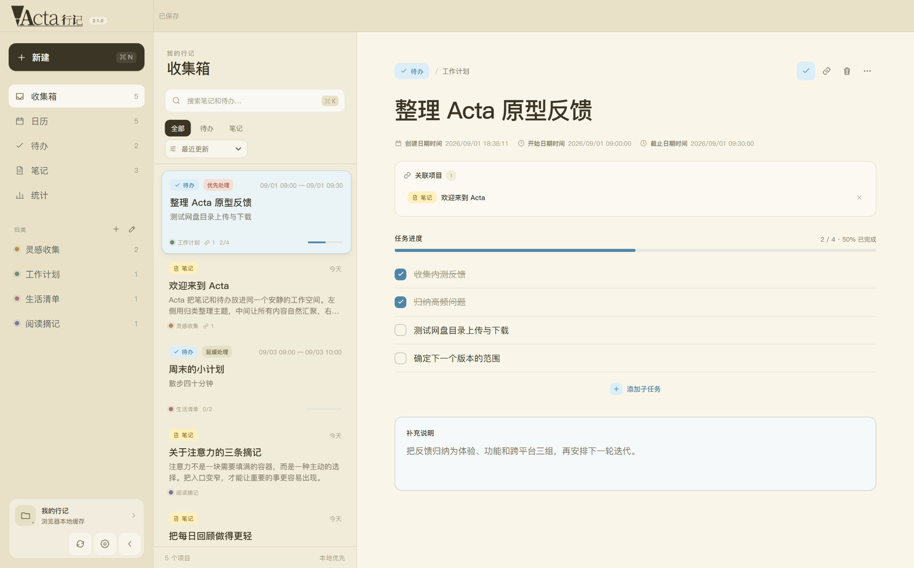

边行，边记。
Acta 是一个本地优先、开源的应用。 笔记和待办位于同一个工作区。


- Android
- 网页版支持 PWA，为 iOS/iPadOS 提供临时性支持。
同步时，只读本地同步目录。WebDAV 的凭据也只会发给你自己配置的服务器。
Acta 是一个本地优先、开源的应用。 笔记和待办位于同一个工作区。


同步时，只读本地同步目录。WebDAV 的凭据也只会发给你自己配置的服务器。
将在新标签页中打开网页版 Acta。要继续吗？